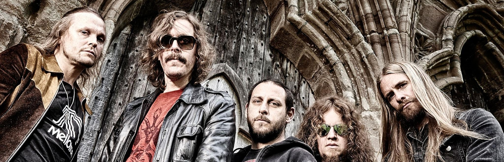
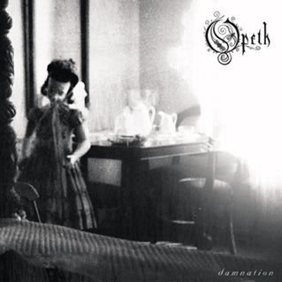
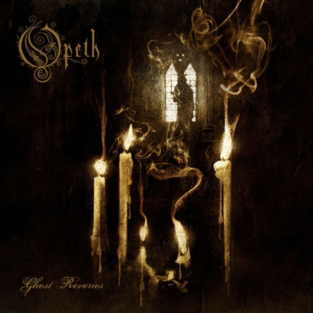

Opeth
874 mil seguidores
Músicas Populares
- Ghost of Perdition
- Deliverance
- Blackwater Park
- Burden
- Windowpane
Álbuns

Still Life

Damnation

Ghost Reveries
Playlists
- Metal Essentials
- Best of Opeth
- Ultimate Progressive Rock
Sobre Opeth
Opeth é uma banda sueca de metal progressivo de Estocolmo. A banda passou por várias mudanças de formação, mas Mikael Åkerfeldt, vocalista, guitarrista e compositor, permaneceu nela desde que entrou imediatamente após a sua criação em 1990.